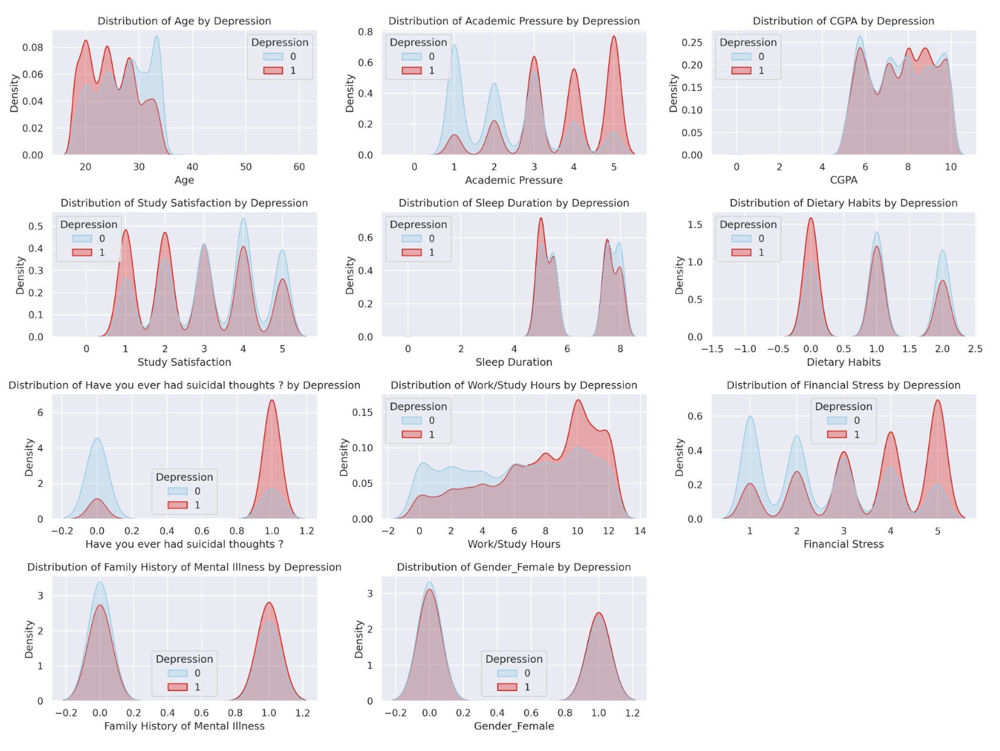
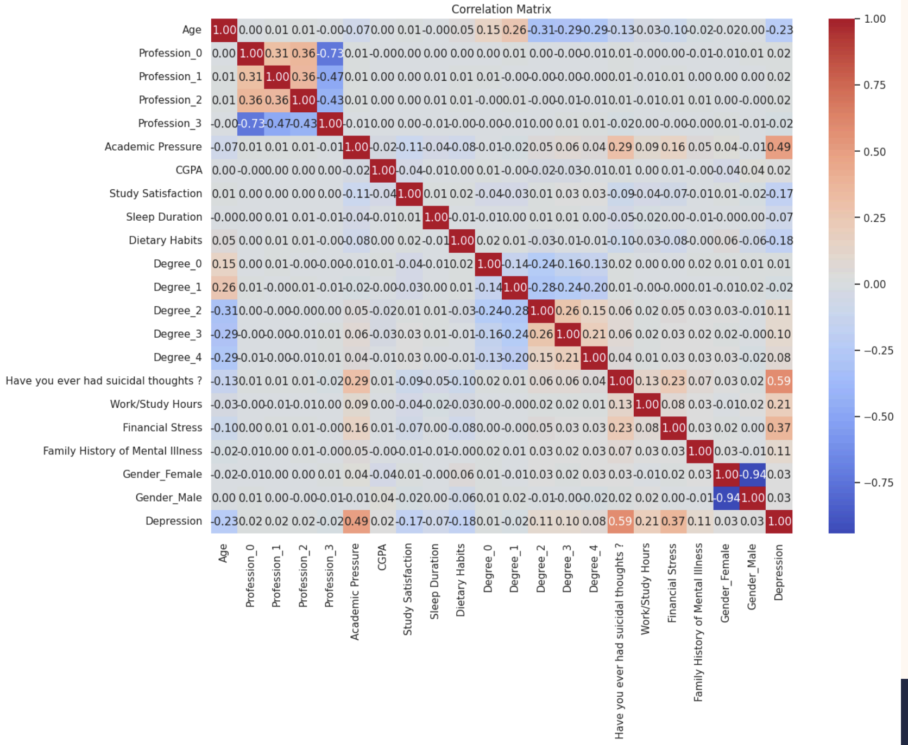

Student Depression Prediction – Mental Health Classifier
This project focuses on predicting the likelihood of depression in students using a real-world dataset collected from Kaggle. It includes data preprocessing, visualization, feature selection, and machine learning models like SVM, KNN, and Random Forest.
📊 Feature Visualization
Used KDE and box plots to explore patterns such as gender-based depression, CGPA impact, and stress indicators.
📌 Feature Selection
Used Mutual Information and RFE to select impactful features like suicidal thoughts, financial stress, and sleep duration.
📈 Model Evaluation
Random Forest outperformed all models with 86% accuracy and recall, making it ideal for minimizing false negatives.